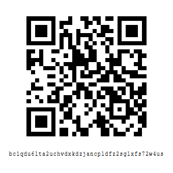
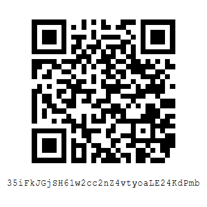

What Donations Support
Donations support ZZX-Labs R&D public infrastructure: research, software, Bitcoin intelligence tools, mirrors, widgets, documentation, papers, downloads, project archives, and future secure service systems.
ZZX-Labs / Donations
Donations help fund public research, software prototypes, Bitcoin tools, documentation, datasets, widgets, infrastructure mirrors, publication workflows, security hardening, and long-horizon development work.
ZZX-Labs is Bitcoin-native. Bitcoin donation support is active. Named donor recognition is inactive until a donor explicitly requests public acknowledgement and the acknowledgement terms are confirmed.
Donations support ZZX-Labs R&D public infrastructure: research, software, Bitcoin intelligence tools, mirrors, widgets, documentation, papers, downloads, project archives, and future secure service systems.
Donation support is structured around Bitcoin. Future systems may include Lightning Network support, LNURL, BOLT12, project-specific invoices, sponsorship records, and cryptographically signed receipts.
Donors are private by default. Named recognition is only published when the donor requests it and the donor name, project allocation, and acknowledgement wording are approved.
Bitcoin-Native Support
Use one of the addresses below. For named donations, grants, partnership funding, restricted project support, research sponsorships, equipment support, or large contributions, contact ZZX-Labs first so acknowledgement, allocation, receipts, and operational handling can be managed correctly.

bc1qdu6lta2uchvdxkdzjancpldfz2sglxfs72w4us

35iFkJGjSH61w2cc2nZ4vtyoaLE24KdPmb
Funding Priorities
Current priorities include public website infrastructure, Bitcoin BPI widgets, Bitnodes and mempool mirrors, CyberChef tooling, research publication workflows, project-driven portfolio generation, documentation, downloads, secure release signing, and Bitcoin-native payment/account architecture.
Reports, analysis, papers, technical notes, public-interest research, dossiers, critiques, proposals, editorial work, and long-form publication.
Open-source tools, PyQt applications, CLI utilities, daemons, APIs, dashboards, automation systems, data pipelines, and local-first infrastructure.
Bitcoin price intelligence, BPI widgets, node visibility, Bitnodes mirrors, mempool mirrors, mining research, Lightning concepts, and payment infrastructure.
Manuals, readmes, architecture notes, specifications, release notes, setup guides, security notes, and project-derived documentation systems.
Mirrors, static-site systems, local testing environments, publication tooling, dataset organization, backups, dashboards, and secure deployment workflows.
Raspberry Pi systems, embedded devices, ESP-class prototypes, interface panels, displays, controls, sensors, media systems, and physical computing experiments.
Donation Handling
ZZX-Labs treats donations as support for research and infrastructure rather than as ordinary product purchases. Unless a donor requests public recognition, donations are not published as named endorsements. Public recognition, when enabled, should be opt-in, accurate, and revocable by request.
Restricted donations should be coordinated before sending funds. If a donor wants support allocated to a specific project, paper, tool, dataset, hardware prototype, service buildout, or publication workflow, the allocation should be discussed first so expectations remain clear.
Small donations may be sent directly to the listed Bitcoin address. They support general research, infrastructure, documentation, and open development.
Large donations should be coordinated through the Contact page before sending funds. This allows ZZX-Labs to verify intent, confirm receipt procedures, and discuss acknowledgement.
Project-specific donations should identify the intended area of support, such as Bitcoin tools, research, documentation, hardware prototyping, AI/ML systems, or infrastructure mirrors.
Future Payment Infrastructure
Future donation and payment systems may include fresh address generation, signed payment requests, Lightning invoices, LNURL, BOLT12 offers, project-specific contribution pages, donor receipts, restricted grants, public sponsorship manifests, and GPG-signed verification records.
The long-term design goal is a Bitcoin-native support system that can distinguish between donations, service payments, retainers, grants, sponsorships, project funding, API access, and future account-based workflows without weakening privacy or operational security.
Verification
Verify that the address is copied correctly. For large donations, contact ZZX-Labs first and use GPG-secured communication where appropriate. Do not rely on screenshots, forwarded messages, social media posts, or third-party copies of donation addresses when sending significant funds.
If a donation address changes, the update should be reflected on the Contact page, Donate page, and relevant key-history or release-verification pages so users can distinguish active donation information from outdated material.
Support the Lab
Donations help ZZX-Labs continue developing public research, Bitcoin-native tools, security-minded software, documentation, infrastructure mirrors, project systems, and long-term open technology.